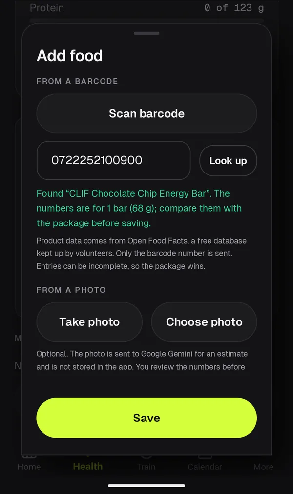
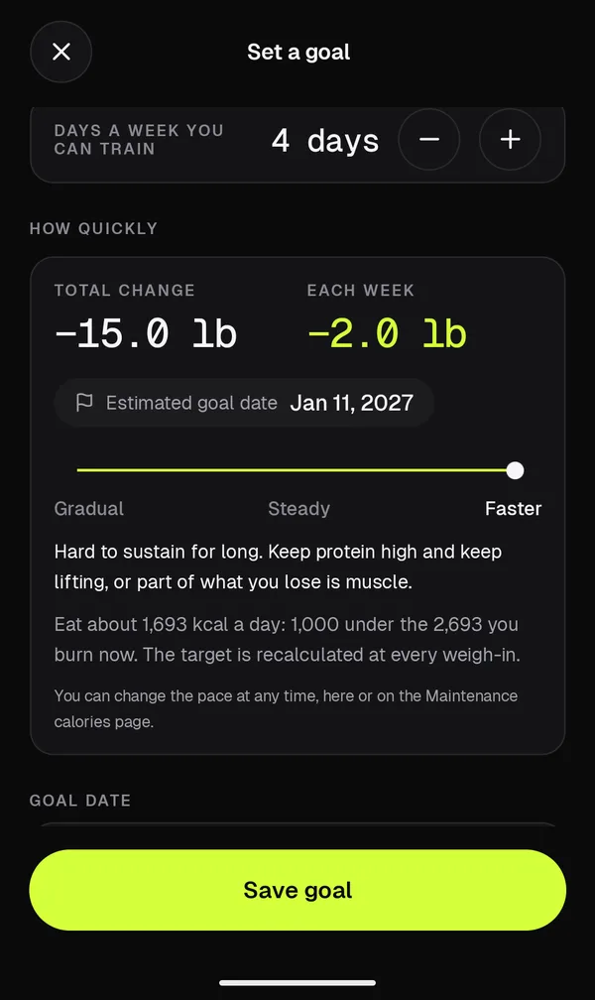
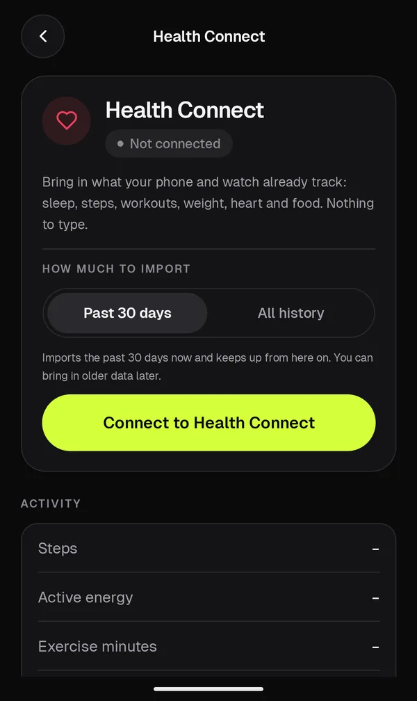
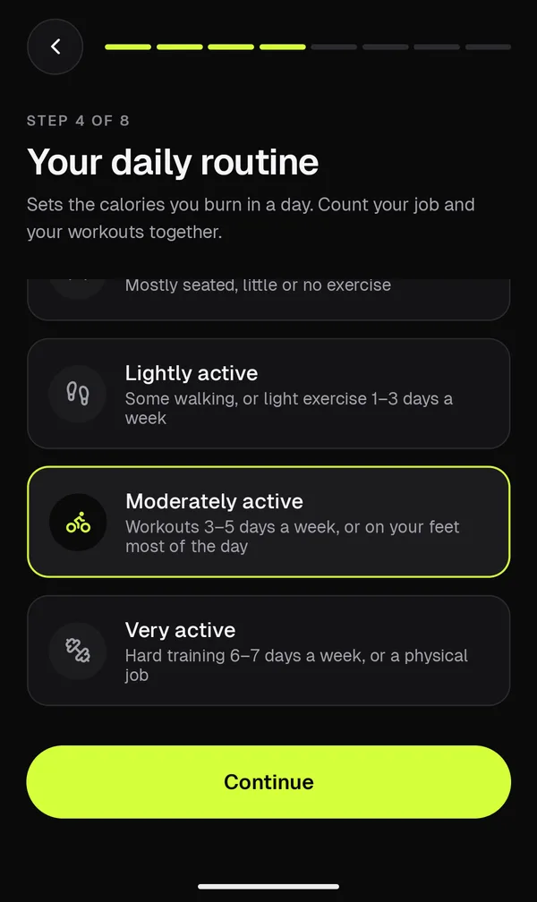

Android test build
Download it, open the file and tap Update. It installs over the build you have and keeps your data.
Download FitnessPro-1.8.apk



Send anything that looks wrong with a screenshot and your phone model.
FitnessPro-1.8.apk in Downloads.Do not uninstall first. Updating keeps your profile, workouts and foods. Uninstalling deletes them.
You need about 250 MB of free space. A Polar OH1, H9, H10 or any Bluetooth chest strap works.
Workout bank with Base, Scaled and No equipment levels, and paste-in class posts. Label reader. Posted workouts on Home and the Calendar. Timers, Workouts and By muscle on the Train tab. Track distance for any workout.
Fixed: a walk "disappearing" when you left the app, frozen screens on long workouts, and forgotten workouts that kept recording. They now pause and save themselves.
Workout by muscle on a 3D body. Maintenance calories, Meal planner, My meals and calories from a photo.
Long-press the FitnessPro icon, tap App info, then Uninstall. This deletes all of your FitnessPro data on the phone, so only do it when you are done testing.